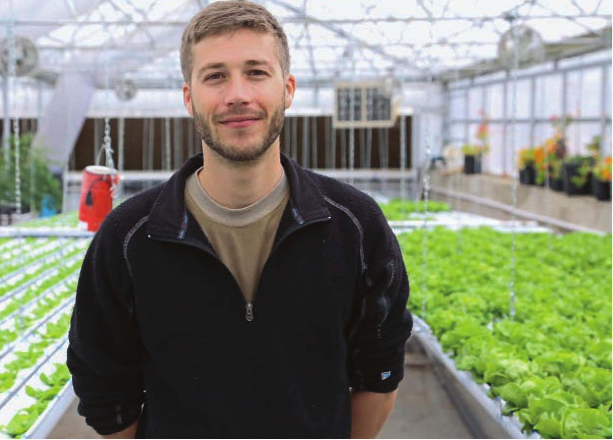

ABOUT THE AUTHOR Tyler Baras, “Farmer Tyler,” is a well-renowned hydroponic grower with extensive experience in both hobby and commercial hydroponics. Besides writing books for both home gardeners and commercial growers, Tyler creates educational videos covering a range of horticultural topics. His website, www.FarmerTyler.com, offers information for hydroponic growers of all experience levels. Tyler graduated Cum Laude from the University of Florida's Horticultural Sciences department specializing in organic crop production. While completing his bachelor of science degree, Tyler traveled overseas to study organic agriculture in Spain and protected agriculture (greenhouse production) in China. After graduation, he worked as a grower for one of the first certified organic hydroponic farms in the United States. In 2013, Tyler moved to Denver, Colorado, where he worked as the hydroponic farm manager at The GrowHaus. He managed a profitable urban farm while creating a successful hydroponic internship program with a 90 percent job placement rate for graduates. The hydroponic farm at The GrowHaus is currently managed by alumni of the farm internship program and continues to provide lettuce for Whole Foods, Safeway, and several local markets. In 2015, Tyler moved to Dallas, Texas, where he designed and constructed a hydroponic demonstration facility devised to study the productivity of various small-scale commercial hydroponic systems. Tyler wrote a commercial hydroponics book based on the collected data from the demonstration facility. This book is available through the horticultural distribution company Hort Americas. While in Texas, Tyler also designed and constructed a hydroponic demonstration facility focused on home hydroponic systems. This facility served as a video studio for several Farmer Tyler educational video series. Tyler and his hydroponic demonstration sites have been featured on P. Allen Smith's Garden Home, which airs on PBS and syndicated stations nationwide. Tyler currently works as a hydroponic consultant and has worked on several notable projects, including Central Market's Growtainer, the first grocery store-owned and -managed on-site farm. Tyler continues to produce video content, which can be seen on digital magazine Urban Ag News and on www.FarmerTyler.com. Special Thanks Chris Higgins Cyrus Moshrefi David & Mary Jo Baras Federico Martinez Lievano Hort Americas, LLC Hydrofarm, Inc. P. Allen Smith Rebecca Jin Ruibal's Plants of Texas Shawna Coronado 192 DIY HYDROPONIC GARDENS
